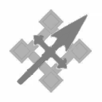
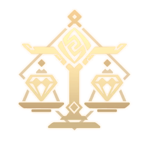

Персонажи
Мавуика
Лидер Натлана, унаследовавшая древнее имя «Кионгози». Она дала обет осветить будущее народа войны Священным пламенем. В сложном узоре ночного неба Тейвата редко можно увидеть столь ослепительное созвездие. Его пылающее сияние словно хочет прожечь дыру в самой ткани небосвода. Когда оно превратится в падающую звезду, устремляющуюся к горизонту, его огонь превратит даже самые глубокие и холодные ночи в яркий день.
Мавуика
Арлекино 

Слуга, четвёртая из Предвестников Фатуи из Снежной. Опытный, безжалостный дипломат. «Отец», которого боятся и на которого полагаются дети Дома очага.
Арлекино
Ху Тао 
Хозяйка ритуального бюро «Ваншэн» в семьдесят седьмом поколении. Она унаследовала этот бизнес в достаточно юном возрасте. Оригинальная личность из Ли Юэ. Предугадать невозможно, недооценивать нельзя. Но если ты любишь сюрпризы, познакомиться с ней обязательно.
Ху Тао